Apache NetBeans
Apache NetBeansLatest release
NetBeans Property Editors Tutorial
Last reviewed on 2021-01-03
This tutorial shows techniques for using property editors in NetBeans, including providing custom editors and custom in-place editors. Specifically, the following will be covered:
-
Providing your own property editor for an individual Node
-
Creating a custom editor
-
Creating a custom in-place editor
-
Registering a custom property editor globally
For troubleshooting purposes, you are welcome to download the completed tutorial source code.
Related community tutorials:
Introduction to Custom Property Editors
Often you may have a property for which either the standard property editor is not sufficient, or the property type is a class for which there is no standard property editor. NetBeans IDE contains classes for many common Java types, but every possible need cannot be covered by a set of generic property editors.
This tutorial is intended as a follow-on to these preceding tutorials, and its code is based on the code from them:
If you have not yet done these tutorials, you should do them first; or at least ensure you are familiar with the content and approach used, and download the completed result of the third tutorial.
You’ll pick up where you left off in the previous tutorial, with the class EventNode, which wraps an Event object, and offers a read-only property for its index property and a read/write one for its date property.
Creating a Property Editor
The basics of creating a property editor are pretty simple. The JavaBeans API offers a base class, PropertyEditorSupport, which covers most of the basics, and can be used to create a simple property editor with little work.
Property editors serve two purposes — converting values to and from strings for display in the property sheet, and validating new values when they are set. To start out, you will create a property editor which handles ZonedDateTime, which the Apache NetBeans Platform does not (as of 12.2) support, as seen in the previous tutorial. This new property editor will avoid the String based hacks in the Event model class.
-
Right click the
org.myorg.myeditorpackage, and choose New > Java Class. In the wizard, name the classDatePropertyEditor.
-
In the code editor, change the class signature to extend
PropertyEditorSupport:
public class DatePropertyEditor extends PropertyEditorSupport {-
Implement
setAsText()andgetAsText()as follows:
@Override
public String getAsText() {
ZonedDateTime d = (ZonedDateTime) getValue();
if (d == null) {
return "No Date Set";
}
return DateTimeFormatter.ISO_ZONED_DATE_TIME.format(d);
}
@Override
public void setAsText(String s) {
try {
setValue(ZonedDateTime.parse(s));
} catch (DateTimeParseException ex) {
IllegalArgumentException iae = new IllegalArgumentException("Could not parse date");
throw iae;
}
}-
Open
EventNodein the code editor. Change the line that declaresdateProperty(in thecreateSheet()method) so that the variable is declared asPropertySupport.Reflectionrather thanProperty. You will be calling a method specific toPropertySupport.Reflection:
PropertySupport.Reflection dateProp = new PropertySupport.Reflection(obj, ZonedDateTime.class, "date");-
Insert a new line after that line:
dateProp.setPropertyEditorClass(DatePropertyEditor.class);-
Run the Event Manager and note the new format of the ZonedDateTime property, as shown here:
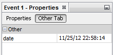
-
Because we are no longer reliant on the String conversion in the Event API class, we have much better separation of the model and view. To see this, change the
getAsText()implementation inDatePropertyEditorto return a localised format, as shown below:
return DateTimeFormatter.ofLocalizedDateTime(FormatStyle.FULL).format(d);Now when you run again, the property is displayed with a different format, which will depend on your locale, but might look similar to this:
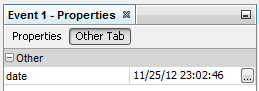
Creating a Custom Editor
Another basic feature of standard `java.beans.PropertyEditor`s is the ability to have a "custom editor", which usually appears in a dialog when you click a "…" button beside the property in the property sheet.
Going into the details of implementing such an editor is out of scope for this tutorial, but here are the basics:
-
Implement the following two methods on
DatePropertyEditor:
@Override
public Component getCustomEditor() {
return new JLabel ("I want to be a custom editor");
}
@Override
public boolean supportsCustomEditor() {
return true;
}-
Run the Event Manager, and now you have a "…" button beside the property in the property sheet, as shown below:
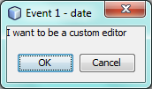
Click it, and your JLabel appears:
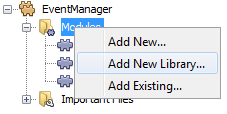
If you were doing this for real, you would create a JPanel, and embed some sort of calendar and/or clock component to make it easy to set the properties; the code necessary to do it right would be a distraction here.
This custom editor approach might be appropriate where the value is non-obvious, and you are providing a wizard or other domain-specific support to the user.
-
Remove both of the above two methods before continuing because we’re going to create a real date editor in the next section.
Creating a Custom In-place Editor
What would be really useful is to have a better date editor embedded in the property sheet itself. NetBeans has an API that makes this possible. It involves a bit of code, but the result is worth it.
We’ll take the opportunity to explore adding an external library for the Date/Time picker that will be used. In a larger application, you’ll likely use a combination of in-built Swing controls (perhaps with JavaFX components embedded), third-party libraries, and custom components you develop.
-
Download a recent release of LGoodDatePicker (as a jar) from its Project site.
-
Expand the Event Manager, right-click the Modules node, and choose Add New Library.
-
Click Browse next to the Library text field, and select the jar file you just download.
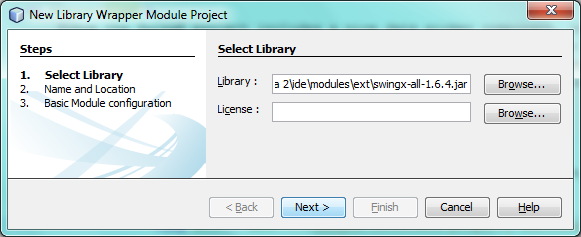
Click Next.
-
Your paths will look different, but you should see something similar to:
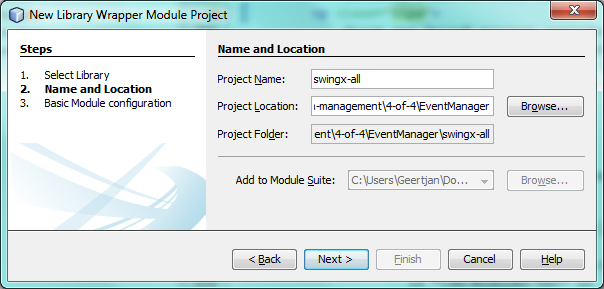
Click Next again.
-
Set the code name base to
org.github.lgooddatepicker:
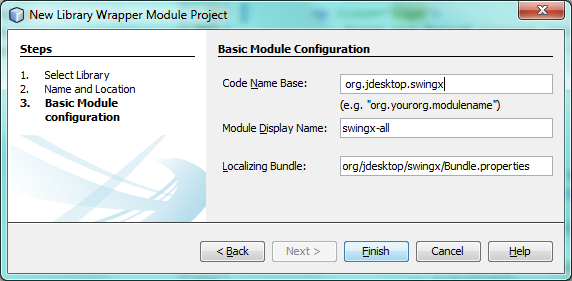
Click Finish and you should see the new module, wrapping the selected JAR:
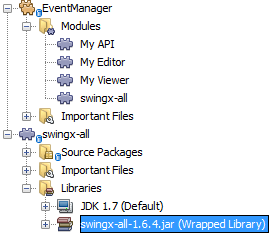
-
Right click the My Editor project node in the Projects tab in the main window, and choose Properties. In the Libraries page, click the Add Dependency button, and select your new "LGoodDatePicker" module.
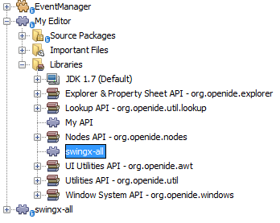
When you click OK, you will see the new dependency:
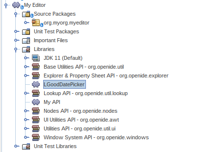
Now you are ready to make use of the date picker. This will involve implementing a couple of NetBeans-specific interfaces:
-
ExPropertyEditor - a property editor interface through which the property sheet can pass an "environment" (
PropertyEnv) object that gives the editor access to thePropertyobject it is editing and more. -
InplaceEditor.Factory - an interface for objects that own an
InplaceEditor. -
InplaceEditor - an interface that allows a custom component to be provided for display in the property sheet.
You will implement InplaceEditor.Factory and ExPropertyEditor directly on DatePropertyEditor, and then create an InplaceEditor nested class:
-
Change the signature of
DatePropertyEditoras follows:
public class DatePropertyEditor extends PropertyEditorSupport implements ExPropertyEditor, InplaceEditor.Factory {-
As in earlier examples, press Ctrl-Shift-I to Fix Imports.
-
Add the following methods to
DatePropertyEditor:
@Override
public void attachEnv(PropertyEnv env) {
env.registerInplaceEditorFactory(this);
}
private InplaceEditor ed = null;
@Override
public InplaceEditor getInplaceEditor() {
if (ed == null) {
ed = new Inplace();
}
return ed;
}-
Now you need to implement the
InplaceEditoritself. This will be an object that owns a DateTimePicker component, and some plumbing methods to set up its value, and dispose of resources when it is no longer in use. It requires a bit of code, but it’s all quite straightforward.
Just create Inplace as a static nested class inside DatePropertyEditor:
private static class Inplace implements InplaceEditor {
private final DateTimePicker picker = new DateTimePicker();
private PropertyEditor editor = null;
@Override
public void connect(PropertyEditor propertyEditor, PropertyEnv env) {
editor = propertyEditor;
reset();
}
@Override
public JComponent getComponent() {
return picker;
}
@Override
public void clear() {
//avoid memory leaks:
editor = null;
model = null;
}
@Override
public Object getValue() {
LocalDateTime d = picker.getDateTimePermissive();
ZonedDateTime zdt = d.atZone(ZoneId.systemDefault());
return zdt;
}
@Override
public void setValue(Object object) {
ZonedDateTime zdt = (ZonedDateTime) object;
if (zdt != null) {
picker.setDateTimePermissive(zdt.toLocalDateTime());
}
}
@Override
public boolean supportsTextEntry() {
return true;
}
@Override
public void reset() {
ZonedDateTime zdt = (ZonedDateTime) editor.getValue();
if (zdt != null) {
picker.setDateTimePermissive(zdt.toLocalDateTime());
}
}
@Override
public KeyStroke[] getKeyStrokes() {
return new KeyStroke[0];
}
@Override
public PropertyEditor getPropertyEditor() {
return editor;
}
@Override
public PropertyModel getPropertyModel() {
return model;
}
private PropertyModel model;
@Override
public void setPropertyModel(PropertyModel propertyModel) {
this.model = propertyModel;
}
@Override
public boolean isKnownComponent(Component component) {
return component == picker || picker.isAncestorOf(component);
}
@Override
public void addActionListener(ActionListener actionListener) {
//do nothing - not needed for this component
}
@Override
public void removeActionListener(ActionListener actionListener) {
//do nothing - not needed for this component
}
}-
If you haven’t already, press Ctrl-Shift-I to Fix Imports.
-
Run the Event Manager again, select an instance of
EventNode, and click the value of the date property in the property sheet. Notice that the date-time picker popup appears, and behaves exactly as it should, as shown below:
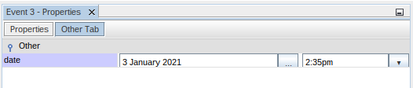
Registering DatePropertyEditor Globally
Often it is useful to register a property editor to be used for all properties of a given type. Indeed, your DatePropertyEditor is generally useful for any property of the type java.time.ZonedDateTime. While usefulness is not the primary determinant of whether such a property editor should be registered, if your application or module will regularly deal with date/time properties, it might be useful to do so.
Here is how to register DatePropertyEditor so that any property of the type java.time.ZonedDateTime will use DatePropertyEditor in the property sheet:
-
Annotate the
DatePropertyEditorclass with @PropertyEditorRegistration(targetType = ZonedDateTime.class) so that it looks like:
@PropertyEditorRegistration(targetType = ZonedDateTime.class)
public class DatePropertyEditor extends PropertyEditorSupport implements ExPropertyEditor, InplaceEditor.Factory {This annotation will register your custom DatePropertyEditor as the default editor for all properties of the type java.time.ZonedDateTime throughout the application.
-
In the
EventNodeclass, delete this line, which is not needed anymore, thanks to the previous step:
dateProp.setPropertyEditorClass(DatePropertyEditor.class);Now when you run, the application behaviour will be unchanged, but the EventNode implementation is no longer coupled to a specific property editor implementation.
Using PropertyPanel
While we won’t cover it, it is worth mentioning that the property sheet is not the only place that Node.Property objects are useful; there is also a convenient UI class in the org.openide.explorer.PropertySheet class called PropertyPanel. It’s function is to display one property, much as it is displayed in the property sheet, providing an editor field and a custom editor button, or you have called somePropertyPanel.setPreferences(PropertyPanel.PREF_CUSTOM_EDITOR), it will display the custom editor for a Property. It is useful as a convenient way to get an appropriate UI component for editing any getter/setter pair for which there is a property editor.